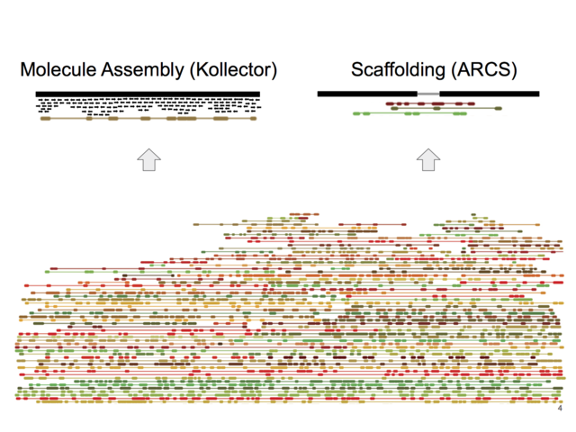
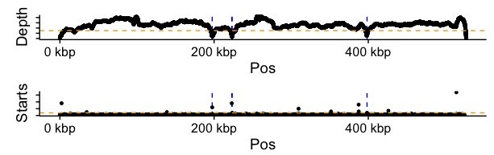
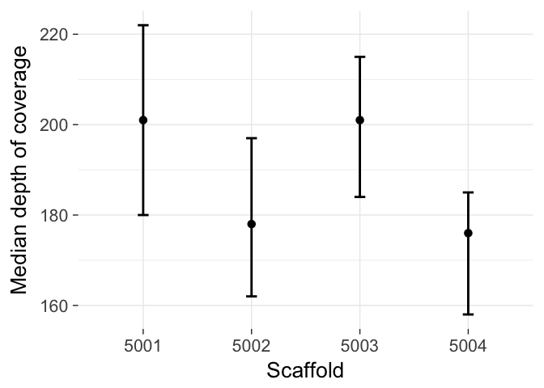

Tigmint
Correct Misassemblies Using Linked Reads From Large Molecules
Shaun Jackman @sjackman
Benjamin P Vandervalk, Rene L Warren, Hamid Mohamadi, Justin Chu, Sarah Yeo, Lauren Coombe, Joerg Bohlmann, Steven JM Jones, Inanc Birol
Shaun Jackman
10x Genomics Chromium Linked Reads http://www.10xgenomics.com/assembly/
Large molecules of DNA (100 kbp and up) are isolated in partitions
Each partition has its own barcode
Reads from the same molecule share the same barcode
One nanogram of input DNA with 10x Genomics Chromium
Linked Reads
Call variants in repetitive regions
Identify structural variants
Phase variants

B-040 · Local assembly with Kollector · Justin Chu
B-048 · ABySS 2.0 · Ben Vandervalk
One sequencing library
Scaffold over gaps and repeats
Local assembly of gaps and repeats
Identify and correct misassemblies
Contigs and scaffolds come to an end due to...
repeats
sequencing gaps
heterozygous variation
misassemblies
Misassemblies limit contiguity
particularly for highly contiguous assemblies.
Most scaffolding algorithms address repeats and gaps, but not misassemblies.
Correct misassemblies
Correct misassemblies
Scaffold
Tigmint
Count molecules that support and refute each position of the assembly
Output positions of possible misassemblies

Regions with poor molecule depth are suspect
Clipped read alignments at molecule ends
Highlight possible misassemblies
Scatter plot of molecule start and end coordiantes
Menagerie of Misassemblies
Chimeric sequence Missing sequence (deletion)Chimeric insertion
Inversion
Collapsed repeat
ABySS 2.0 assembly of GIAB HG004
Tigmint, at least 4 clipped molecules
Tigmint, at least 3 clipped molecules
Tigmint, at least 2 clipped molecules
Sitka Spruce Mitochondrion
16 scaffolds, N50 is 0.46 Mbp
Sitka Spruce Mitochondrion
Before and After Tigmint
N50 improved nine fold from 0.46 Mbp to 4.2 Mbp
Poster B-066
Assembled organelles from WGSS
6 Mbp mitochondrial genome in 4 scaffolds > 50 kbp
Nine fold improvement in N50
70% of genome in one 4.2 Mbp scaffold
ABySS + ARCS
16
0.46 Mbp
+ Tigmint
4
4.2 Mbp
Linked reads
Large molecules of DNA (100 kbp and up) are isolated in partitions
Each partition has its own barcode
Reads from the same molecule share the same barcode
One nanogram of input DNA with 10x Genomics Chromium
Scaffold with ARCS
Map the reads to the assembly
Identify scaffold ends sharing common barcodes
Construct a graph
Each edge connects two scaffold ends
Merge unambiguous paths through this graph
ARCS: Assembly Roundup by Chromium Scaffoldinghttps://doi.org/10.1101/100750
Visualization
Graph of 10 kbp segments sharing barcodes
Scatter plot of molecule start and end position
Physical molecule coverage
Histogram of clipped read alignments at molecule ends
Highlight breakpoints (or putative misassemblies)
Chimeric scaffold involving a 2 kbp repeat
Human Assembly
Assemble paired-end/mate-pair with ABySS 2.0
Correct misassemblies with 10x Chromium
Assembly locus discordant with both the linked reads and the reference is likely a misassembly
Requiring 4 clipped molecules
Requiring 3 clipped molecules,
Requiring 2 clipped molecules,
Human Assemblies
ABySS
39
38 (97%)
2717
2679
ABySS + Bionano + ARCS
78
14 (18%)
2757
2743
Supernova
163
56 (34%)
3883
3827
Genome in a Bottle HG004
Genome Skimming
Assemble the 6 Mbp Sitka spruce mitochondrion
Whole genome sequencing data contains both nuclear and organellar reads
Hundreds of mitochondria and plastids per cell
Reads of the organellar genomes are abundant
Organellar genomes assemble with a single lane
Single-copy nuclear sequences are too low depth to assemble well
White spruce depth vs percent GC
Sitka Spruce Mitochondrion
Assembled organelles from WGSS
6 Mbp mitochondrial genome in 4 scaffolds
Nine fold improvement in N50
70% of genome in one 4.2 Mbp scaffold
ABySS + ARCS
16
0.46 Mbp
+ Tigmint
4
4.2 Mbp
Depth of coverage per scaffold
Sitka spruce mitochondrion
Number of HiSeq lanes
1 GemCode lane
1 Chromium lane
Read length
2 x 125 bp
2 x 150 bp
Number of read
630 million
843 million
Number selected for assembly
4.3 million
119 million
Number mapped to assembly
15,232 of 4.3 M
3.78 M of 843 M
Proportion of organellar reads
1/283 0.35%
1/223 or 0.45%
Depth of coverage
17x
40x
Assembled genome size
124,029 bp
6.09 Mbp
Number of contigs
1 contig
1,216 contigs
Contig N50
124 kbp
13.7 kbp
Number of scaffolds
1 scaffold
239 scaffolds
Scaffold N50
124 kbp
461 kbp
Largest scaffold
124 kbp
1,223 kbp
GC content
38.8%
43.6%
Number of genes w/o ORFS
114 (108)
115 (67)
Protein-coding genes (mRNA)
74 (72)
84 (47)
rRNA genes
4 (4)
3 (2)
tRNA genes
36 (32)
25 (18)
ORFs ≥ 300 bp
4
1,154
Introns in coding genes
9 (8)
9 (6)
Introns in tRNA genes
6 (6)
0